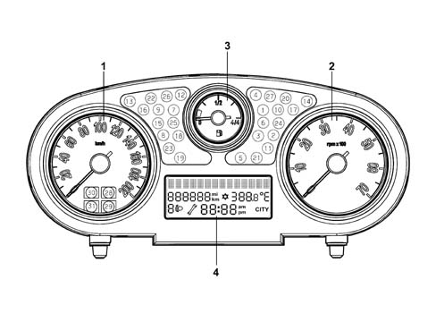
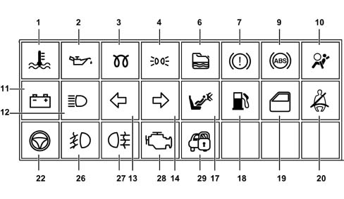
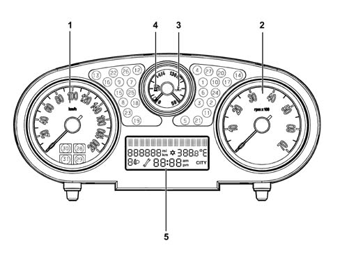
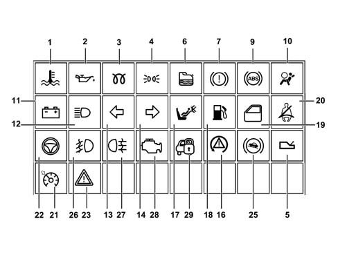
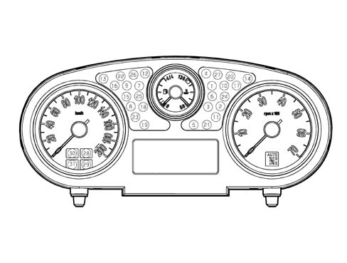
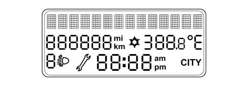
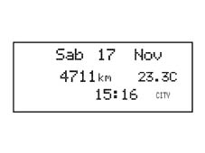
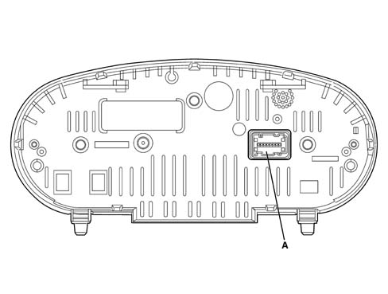
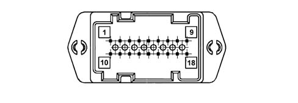

Introduction - INSTRUMENT PANEL
- Path
- Descriptions > 55 ELECTRICAL EQUIPMENT > 5560 INSTRUMENT PANEL > Introduction - INSTRUMENT PANEL
- Kind
- system description
- Applies to
- all engines; all production periods
- Interactive page
- https://sloeber94.github.io/elrnDB-lYpsln/en/#/2429857
Applies to: all engines; all production periods
SPECIFICATIONS
The Instrument Panel Node (NQS) is available in two trim levels:
- LOW range versions
- HIGH range versions
There is also a variant for vehicles equipped with 'Dual Drive' gearboxes with an extra LCD in the rev counter section to display the gear engaged and the gearbox operating mode.
Applies to: all engines; all production periods; only with equipment: Low setup
Control Panel
View of assembly

Applies to: all engines; all production periods; only with equipment: Low setup
Control Panel
1 - speedometer
2 - rev counter
3 - fuel level gauge (with reserve warning light)
4 - multifunction display
Applies to: all engines; all production periods; only with equipment: Low setup
Components
The panel comprises 3 analogue indicators:
- electronic speedometer
- electronic rev counter
- fuel gauge (with reserve warning light)
All the indicators are moved by stepping motors.
There is a central alphanumeric LCD to show the following functions / scales:
- check stage at key on
- Trip Computer information (general and Trip B)
- outside temperature (and ice warning symbol)
- date
- failure, warning, function activation, service messages and symbols
- set up menu with setting / adjustment messages
- total mileage
- headlamp alignment symbol / indication
- CITY driving mode selection symbol / indication (electric steering)
- clock
The panel contains numerous LEDs, a buzzer for reproducing the following acoustic signals: alarm signal, warning signal and roger beep.
Warning lights in the instrument panel.

1 - Engine temperature 2 - Engine oil pressure 3 - Heater plugs (diesel) 4 - Side lights 6 - Water in fuel filter (diesel) 7 - Handbrake or insufficient brake fluid level 9 - ABS 10 - Airbag 11 - Recharging 12 - Main beam headlamps 13 - Left direction indicator 14 - Right direction indicator 17 - Passenger Air Bag disabled 18 - Fuel level warning light 19 - Doors not properly shut 20 - Seat belt not fastened 22 - Electric steering fault 26 - Foglamp 27 - Rear foglamp 28 - EOBD 29 - Vehicle protection system
Applies to: all engines; all production periods; only with equipment: High setup
Control Panel
View of assembly

1 - speedometer 2 - rev counter 3 - engine temperature gauge 4 - fuel level gauge (with reserve warning light) 5 - multifunction display
Applies to: all engines; all production periods; only with equipment: High setup
Components
The panel consists of 4 analogue indicators:
- electronic speedometer
- electronic rev counter
- engine temperature gauge (with overheating warning light)
- fuel gauge (with reserve warning light)
All the indicators are moved by stepping motors.
On the top of the range version there is 1 display for the following scales / functions:
- check stage at key on
- Trip Computer information (general and Trip B)
- outside temperature (and ice warning symbol)
- date
- failure, warning, function activation, service messages and symbols
- set up menu with setting / adjustment messages
- total mileage
- headlamp alignment symbol / indication
- CITY driving mode selection symbol / indication (electric steering)
- clock
The panel contains numerous indicator leds

1 - Engine temperature 2 - Engine oil pressure 3 - Heater plugs (diesel) 4 - Side lights 5 - Robotised gearbox failure 6 - Water in fuel filter (diesel) 7 - Handbrake or insufficient brake fluid level 9 - ABS 10 - Airbag 11 - Recharging 12 - Main beam headlamps 13 - Left direction indicator 14 - Right direction indicator 16 - ESP 17 - Passenger Air Bag disabled 18 - Fuel level warning light 19 - Doors not properly shut 20 - Seat belt not fastened 21 - Cruise control 22 - Electric steering fault 23 - General fault 25 -Hill holder failure 26 - Foglamp 27 - Rear foglamp 28 - EOBD 29 - Vehicle protection system
Applies to: all engines; all production periods; only with equipment: Smart gearbox and High setup
Components
On vehicles equipped with dualdrive, the panel has one extra display in the rev counter section to show the gear engaged and the gearbox operating mode.
Control panel for specifications with Dualdrive gearbox:

Applies to: all engines; all production periods; only with equipment: Smart gearbox and High setup
Components
Central LCD display:

Applies to: all engines; all production periods; only with equipment: High setup
Components
Applies to: all engines; all production periods; only with equipment: High setup
Shown on display at key on
.

Applies to: all engines; all production periods; only with equipment: High setup
Shown on display at key on
Information shown on the standard display (on 14 character alphanumerical rows) is as follows:
- date
- clock
- total mileage
- headlamp alignment corrector info
- outside temperature
- 'Snow' symbol (if there is danger of ice)
- 'City' symbol (if on)
- robotised gearbox information on a separate display
The standard display is present as long as no function requiring display output is active.
Applies to: all engines; all production periods; only with equipment: High setup
Acoustic indicator
Some functions and warnings are notified via an acoustic signal. This function (buzzer) is performed by means of a piezoelectric acoustic signal.
The buzzer indicates the onset of the following situations by means of a specific procedure:
- Alarm / warning / danger signals;
- Door/Boot/Bonnet open with vehicle in motion;
- Handbrake pulled with vehicle in motion;
- Seat belts unfastened;
- Speed limit
- Danger of ice
- Fuel reserve
- Limited range (Trip Computer);
- Roger Beep upon key depression
- Robotised gearbox signals
Applies to: all engines; all production periods; only with equipment: High setup
Warning lights and signals
Some of the warning light LEDs are tested: LED function is tested throughout the period. The following warning lights are tested: ABS, handbrake, ESP, electric steering failure, driver and passenger airbag.
Applies to: all engines; all production periods; only with equipment: High setup
EOBD warning light (for petrol and JTD engine)
The AMBER warning light is activated by the engine control unit for about 4 seconds (check) when the ignition key is turned on.
The EOBD (European On Board Diagnosis) system carries out continuous diagnosis of the car's petrol fuel system components relating to emissions and indicates any deterioration of these components by the warning light in the instrument panel coming on.
The aim of the system is:
- keeping the efficiency of the system under control;
- signalling an increase in emissions due to a vehicle malfunction;
- signalling the need to replace deteriorated components.
Applies to: all engines; all production periods; only with equipment: High setup
Danger/warning indication: 'Doors open'
To notify the driver that one or more doors are open, the display shows a message corresponding to door/bonnet/boot status as soon as they are open.The panel warning light stays on until all the doors and the boot are properly closed.
in addition, if this signal is associated with a particular speed threshold being surpassed, an acoustic signal is activated.
Applies to: all engines; all production periods; only with equipment: High setup
Display of the outside temperature
The outdoor temperature reading is shown on a standard screen. It is possible to select the measurement unit from the setup menu: degrees centrigrate '°C' or degrees Fahrenheit '°F'
Applies to: all engines; all production periods; only with equipment: High setup
Danger/warning signal: 'Ice'
In order to warn the driver of the possible presence of ice on the road, if the outside temperature measured is less than or equal to 3 °C, the Comfort control panel displays:
- an 'Ice danger' warning message with icon (snowflake symbol)
- flashing temperature reading
- an acoustic signal sounds
Applies to: all engines; all production periods; only with equipment: High setup
Seatbelt unfastened signal
The seat belt warning light indicates seatbelt unfastened status (driver side) by coming in fixed mode from key-on.
The panel warning light begins to flash and the buzzer sounds intermittently when one of the following situations arises:
Time elapsed of 60s and vehicle speed greater than 10 km/h
Vehicle speed greater than 25 km/h
Distance travelled greater than 500 m
Applies to: all engines; all production periods; only with equipment: High setup
Fault messages
When vehicle malfunctions arise, the display shows:
- a fault warning light (if present)
- a message corresponding to the fault description
- a 'Go to service centre' (spanner) symbol or messages indicating actions to be performed by the driver
A buzzer also sounds in synchrony with the display that lights up with maximum brightness.
Applies to: all engines; all production periods; only with equipment: High setup
SERVICE function
When the next service is nearly due, the spanner symbol and the message 'Service due in' followed by the number of kilometres or days until the next service is due is automatically displayed at the key-on (after the initial check procedure).
The service information can also be shown on the display, if requested by the driver, by selecting the appropriate item in the set-up menu. In this case, the display can always be shown, irrespective of the service interval.
The Planned Maintenance Programme includes 9 services with the following intervals:
1st service | 2nd sevice | 3rd service | 4th, 5th, 6th, 7th, 8th | 9th service |
|---|---|---|---|---|
After: - 20,000 km 1 year | After: 20,000 km 1 year from the 1st service | After: 20,000 km 1 year from the 2nd service | After: .............. | After: 20,000 km 1 year from the 8th service |
The service information is supplied in 'km' or in 'days' depending on which comes first.
Therefore, when a stage is reached (e.g. relating to the mileage: '2000 km'), the automatic signalling at the key-on of any other stage (e.g. relating to days) which could be reached later on should be excluded. In other words, once the mileage stage has been passed, the automatic display of all intervals relating to time should be inhibited, whilst the stages relating mileage will only be displayed once passed.
Applies to: all engines; all production periods; only with equipment: High setup
SERVICE function
The first message is only displayed once at the key-on if one of the following conditions occurs:
- the mileage until the service is equal to or less than 2000 km
- the no. of days until the service is equal to or less than 30
Later on, the message is only displayed once at the key-on each time the value is equal to or less than the following values:
- 1800, 1600, 1400, 1200, 1000, 800, 600, 400, 200, 100, 50 km
- 27, 24, 21, 18, 15, 12, 9, 6, 3 days.
The SERVICE display is only shown once at the key-on each time the km / mi or days value is equal to or less than the figure given in the table below:
Levels in 'km' for Planned Maintenance. | Levels in 'miles' for Planned Maintenance. | Levels in 'days' for Planned Maintenance. |
|---|---|---|
2000 km | 1240 mi | 30 days |
1800 km | 1116 mi | 27 days |
1600 km | 992 mi | 24 days |
1400 km | 868 mi | 21 days |
1200 km | 744 mi | 18 days |
1000 km | 620 mi | 15 days |
800 km | 496 mi | 12 days |
600 km | 372 mi | 9 days |
400 km | 248 mi | 6 days |
200 km | 124 mi | 3 days |
100 km | 62 mi | |
50 km | 31 mi |
The moment the value 0 Km, 0 mi or 0 days is reached, the message 'SERVICE OVERDUE' is shown at every key-on.
- At each service interval, the 'Km' (or mi) counter or day counter should be reset using an Examiner to the starting value (20,000 Km and 365 days)
If the control panel is being replaced, the Service personnel should:
- rest the km/mi on the milometer.
- read the number of services carried out and record them in the new panel.
- read the counters showing km/mi and days until the next service and record them in the new panel.
Applies to: all engines; all production periods; only with equipment: High setup
FOLLOW ME HOME function display
The following are shown on the on-board display:
- the follow me home function activated message
- total display seconds (set using stalk). After pressing the steering column switch unit 7 times, the time displayed (210 seconds) should not increase any more.
The display of the FOLLOW ME HOME screen remains for 20 seconds starting from the last time the steering column switch unit is pressed unless the function is deactivated during the display through an abort command from the steering column switch unit. This also takes place after the steering column switch unit is pressed for the seventh time.
Applies to: all engines; all production periods; only with equipment: High setup
TRIP COMPUTER
The TRIP function makes it possible to display the journey data on the 14 character line.
Two trip types are present:
- GENERAL TRIP (always activated)
- TRIP B (that can be activated / deactivated from the menu)
The TRIP B ambient is found (when activated) inside the GENERAL TRIP.
The table shows the GENERAL TRIP and TRIP B data
General Trip
General TRIP |
|---|
Range |
Journey distance |
Average consumption |
Instant consumptioin |
Average speed |
Journey time |
Trip B
TRIP B |
|---|
Journey distance - B |
Average consumption - B |
Average speed - B |
Journey time - B |
The units of measurement for the scales are:
Parameters | Units of measurement for decimal metric system | Units of measurement for imperial system |
|---|---|---|
Journey distance | km | miles |
Instant comsuption and Average consumption | km/ll/100km | mpg |
Range | km | mi |
Average speed | km/h | mph |
Journey time | hh:mm | hh:mm |
The unit of measurement for the consumption can be set by the customer (Km/l or l/100 Km)
The instrument panel receives the following information to calculate these scales:
Input for instrument panel | Received from |
|---|---|
Instant journey (milometer signal) | Body Computer |
Fuel level (% in relation to a full tank) | Body Computer |
Fuel tank capacity, in litres | Stored in panel |
Actual instant speed | Body Computer |
Instant consumption (in litres/hour); | Engine control ECU |
Journey time counted | Clock in panel |
(Information transmitted from the Nodes shown in the table travel via the B - CAN network).
Applies to: all engines; all production periods; only with equipment: High setup
TRIP zeroing (reset)
The scales can be zeroed or reset in 2 ways:
- AUTOMATIC: GENERAL TRIP after 9999.9 Km (or miles) or after 99.59 hours of journey time; TRIP B after 9999.9 Km (or miles) travelled
- USING THE 'RES' BUTTON: in GENERAL TRIP mode, keeping the button pressed for more than 2 seconds zeroes both the TRIPs; in TRIP B mode, keeping the button pressed for more than 2 seconds zeroes the TRIP B only.
Applies to: all engines; all production periods; only with equipment: High setup
Access to MENU screen
After the initial check stage (A), after the key on and for the standard display (C), pressing the MODE button activates the MENU ambient. Use the (+) and (-) buttons to navigate inside the menu and press the MODE button again to confirm a selection. At this point it is possible to display the menu items in two ways: with the vehicle moving and with the vehicle stationary.
If the vehicle is moving, the menu contains the following items:
- SPEED LIMIT- Selecting speed limit activation/deactivation; Selection of speed limit level (item only displayed if the function has been activated with the previous item)
- LIGHT LIGHTS: dusk sensor sensitivity level adjustment
- MENU OUTPUT: control to return to standard screen
If the vehicle is stationary, the menu contains the following items:
- SPEED LIMIT - Selection of speed limit activation/deactivation; Selection of speed limit level (item only displayed if the function has been activated with the previous item)
- LIGHT SENSOR.: dusk sensor sensitivity level adjustment
- TRIP B. (6) TRIP B activation/deactivation
- CLOCK ADJUSTMENT.: Clock adjustment
- CLOCK MODE : Hour mode (12h/24h)
- DATE DATE: date adjustment
- BOOT IND: activation/deactivation of boot release with release of all doors
- DRIVER'S DOOR GDA: Activation/deactivation of front door unlocking only (De-luxe version only)
- DOOR DOOR: Activation/deactivation of automatic locking of doors + boot above 20 km/h
- AUTOCLOSE: Activation/deactivation of automatic locking of the doors when the CID moves away from the vehicle (only with Passive Entry)
- DIST UNIT: Setting unit of measurement for distances
- FUEL CONSUMPTION: Setting unit of measurement for fuel consumption
- TEMP. UNIT: Setting unit of measurement for temperature
- LANGUAGE: Setting language
- BUZZER VOLUME: buzzer volume for alarms / failures / warnings
- BUZZER KEYS: Button pressing buzzer volume (Roger beep)
- SERVICE: Service interval display (km/mi/days)
- MENU EXIT: Command to return to standard screen
Applies to: all engines; all production periods; only with equipment: High setup
connector pin-out
Rear view of instrument panel

Applies to: all engines; all production periods; only with equipment: High setup
connector pin-out
A - Instrument panel connector

Applies to: all engines; all production periods; only with equipment: High setup
connector pin-out
Connector pinout
PIN | OPERATION |
|---|---|
relay | Supply controlled by the ignition |
relay | - 30, direct supply |
3 | B-CAN A |
4 | B-CAN B |
5 | Headlamp correction actuators signal |
6 | Low beam signal for headlamp alignment control |
7 | Earth |
8 | Mode + control signal from dashboard control panel |
9 | Mode - control signal from dashboard control panel |
10 | EOBD fault warning light |
11. | Headlamp alignment corrector signal from dashboard control panel |
12. | Dimmed signal for lighting led |
13 | Air Bag failure warning light |
14 | Passenger Air Bag disabled warning light control |
15 | Seatbelt unfastened command (nc) |
16 | Trip computer key from steering wheel stalk unit |
17 | n.c. |
18 | Signal input for robotised gearbox acoustic alarm |